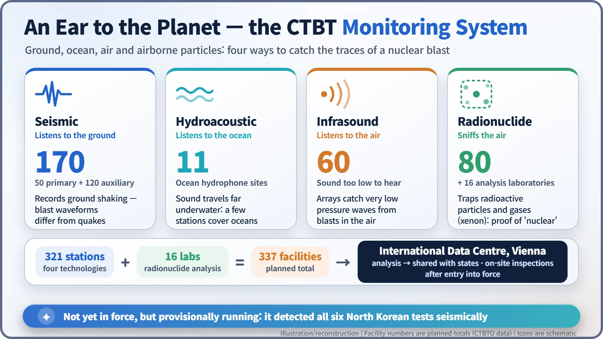
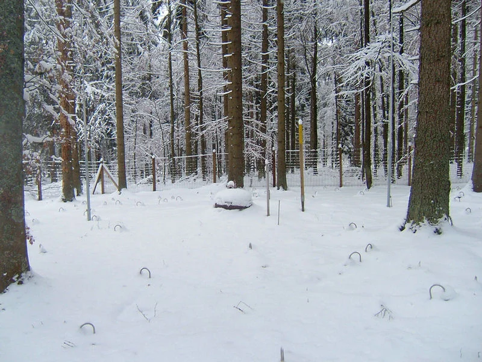
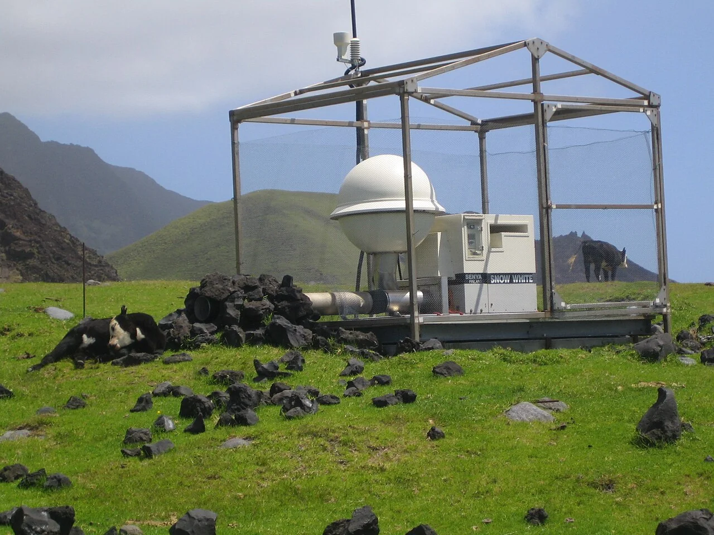

Nuclear History · 273
A Pen That Crossed 33 Years — The Comprehensive Nuclear-Test-Ban Treaty (CTBT, 1996)
Clinton signed it with Kennedy's test-ban pen; 30 years on, 9 of the 44 key states have still not ratified, but the planet-wide listening network is already working.
The Partial Test Ban Treaty of 1963 drove nuclear testing underground but did not stop it. Adopted by the UN General Assembly on 10 September 1996 and opened for signature on 24 September 1996, the Comprehensive Nuclear-Test-Ban Treaty bans every nuclear explosion, anywhere, for any purpose. It has still not entered into force, because 9 of the 44 states whose ratification it requires have not ratified, but its worldwide monitoring network is already listening.
One pen, two treaties
On 24 September 1996, at United Nations headquarters in New York, President Bill Clinton (1946–) became the first leader to sign a new treaty. Shortly afterwards, addressing the General Assembly, he spoke about the pen he had used: "I did so with some pride with this pen, for this pen is the very one that President Kennedy used to help bring the Limited Test Ban Treaty to life 33 years ago." [3]
The pen had been borrowed from the John F. Kennedy Library. One pen, two treaties, 33 years apart. What happened in between?
The tests went underground
The Partial (or Limited) Test Ban Treaty, signed in Moscow on 5 August 1963, banned nuclear tests in the atmosphere, in outer space and under water. Stopping fallout from raining down out of the open sky was a real achievement, but the treaty left one door open: it did not cover underground tests. So testing did not stop. It moved below ground.
In 1974 the United States and the Soviet Union agreed to a separate threshold, banning underground tests larger than 150 kilotons (the energy of 150,000 tonnes of TNT). Smaller tests went on. Between 1945 and 1996 the world carried out more than 2,000 nuclear tests. [6]
![Timeline: Partial Test Ban Treaty 5 August 1963; US-Soviet Threshold Treaty 3 July 1974 banning underground tests above 150 kilotons; UN adopts the CTBT on 10 September 1996 by 158 to 3 with 5 abstentions; opens for signature 24 September 1996 with 71 signatures on day one; US Senate rejects ratification 48 to 51 on 13 October 1999; Russia revokes ratification 2 November 2023. Below, a gauge of 44 circles with 35 filled: Annex 2 states that have ratified. Signed only: US, China, Egypt, Iran, Israel. Not signed: India, Pakistan, North Korea. Revoked: Russia](../../assets/images/history/273-ctbt/fig2-entry-gauge.webp)
Blocked in Geneva, rescued in New York
With the Cold War over, a ban on all testing became a realistic goal. In 1995, when the parties to the Nuclear Non-Proliferation Treaty (NPT) extended it indefinitely, they also adopted principles calling for a comprehensive test ban to be completed by 1996.
Negotiations began at the Conference on Disarmament in Geneva in January 1994, and a final draft emerged in June 1996. But that conference works by consensus. India objected, citing among other things the absence of a time-bound commitment to disarmament by the nuclear-weapon states, and consensus failed. On 22 August 1996 Australia took a different route and asked the UN General Assembly to take up the text directly. [1]
On 10 September 1996 the General Assembly adopted the treaty in resolution 50/245: 158 votes in favour, 3 against (India, Bhutan and Libya) and 5 abstentions. [4] When it opened for signature, 71 states signed on the first day, including all five nuclear-weapon states. Clinton called it "the longest sought, hardest fought prize in arms control history." [3]
A simple ban with a very high threshold
Article I is short. Each party undertakes not to carry out "any nuclear weapon test explosion or any other nuclear explosion." There are no exceptions for place or purpose, which means so-called peaceful nuclear explosions, such as digging canals, are banned too.
The hard part is Article XIV, on entry into force. The negotiators listed by name, in Annex 2, the 44 states that had nuclear power or research reactors at the time, and required every one of them to ratify before the treaty could take effect. The logic was sound: a test ban that left out the states with nuclear capabilities would mean little. But that threshold has proved the highest hurdle of all. [2]
A stethoscope on the planet
A ban only matters if it can be checked. So the treaty came with its own verification network, the International Monitoring System (IMS). Its planned size is 321 monitoring stations plus 16 laboratories, 337 facilities in all.

Some 170 seismic stations record the shaking of the ground; an underground explosion produces a different waveform from a natural earthquake. Sound carries enormous distances under water, so just 11 hydroacoustic stations watch the world's oceans. Sixty infrasound stations listen for pressure waves in the air far too low for human ears.

The clincher is the 80 radionuclide stations. They pump air through filters and catch radioactive particles and gases such as xenon. Seismic signals say "something exploded"; radionuclides say "it was nuclear." All the data flow to the International Data Centre in Vienna for analysis and distribution to member states, and once the treaty enters into force, on-site inspections become possible.

Signed, but the door is still shut
On 13 October 1999 the US Senate rejected ratification, 48 votes in favour and 51 against; 67 were needed. In May 1998 India and Pakistan tested, and between 2006 and 2017 North Korea carried out six tests. Russia ratified in 2000 but revoked its ratification on 2 November 2023, saying it was matching the US position; it remains a signatory. [5] [6]
| Status (as of November 2026) | States |
|---|---|
| All states | 188 signed, 179 ratified |
| Annex 2 states ratified | 35 of 44 (including South Korea: signed 24 Sep 1996, ratified 24 Sep 1999) |
| Annex 2, signed but not ratified | United States, China, Egypt, Iran, Israel |
| Annex 2, not signed | India, Pakistan, North Korea |
| Annex 2, ratification revoked | Russia (ratified 2000, revoked 2023) |
The treaty has still not entered into force. [2]
Ears at work before the door opens
Even so, the monitoring network already runs on a provisional basis. All six North Korean tests were picked up by its seismic stations. After the 2011 Fukushima accident, its radionuclide stations tracked the spread of radioactive material and shared their data with the International Atomic Energy Agency (IAEA), the World Health Organization (WHO) and others. Ears built to catch bomb tests turned out to serve nuclear safety as well. [6]
Kennedy's pen has not yet written the final sentence. But the stethoscopes pressed against the planet have been listening quietly all along.